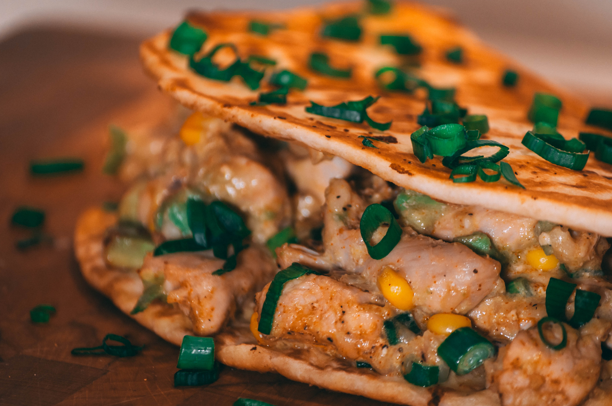

Tacos de Pollo
Un taco es una preparación mexicanaque en su forma estándar consiste en una
tortilla enrollada (generalmente de maíz, también de harina de trigo, de
nopal o de algún otro ingrediente) que contiene algún alimento dentro y
algún tipo de salsa. Es considerado como uno de los platillos más
representativos de la comida mexicana. Los tacos también pueden ser con
doble tortilla cuando el alimento que contenga sea demasiado pesado para
contener con una sola tortilla.

Hamburguesa
Una hamburguesa es un sándwich hecho a base de carne molida o de origen vegetal, aglutinada en forma de filete cocinado a la parrilla o a la plancha, aunque también puede freírse u hornearse. Fuera del ámbito de habla hispana, es más común encontrar la denominación estadounidense burger, acortamiento de hamburger. Se presenta en un pan ligero partido en dos que posee forma de óvalo. Suele estar acompañada de aros de cebolla, hojas de lechuga, alguna rodaja de tomate, láminas de encurtidos y patatas fritas. Se suele aliñar con algún condimento, como puede ser la salsa de tomate, la mostaza, el relish, el kétchup o la mayonesa, entre otros.